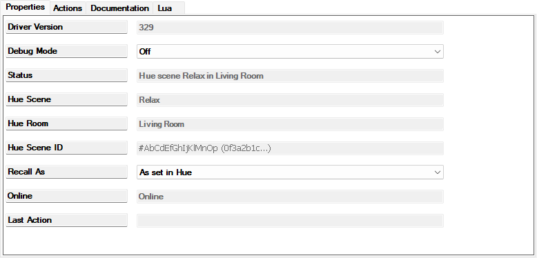
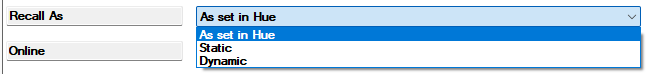

A Hue Scene is one Philips Hue scene (a saved look for a Hue room or zone) shown as a Control4 dimmer: a tile with a slider and a percentage on Navigators and in the Control4 app. Turning it ON plays the scene on the Hue bridge (recalls it, in Hue's word), so every light in that Hue room or zone takes the scene's look; turning it OFF turns that whole Hue room or zone off, with one request to the bridge. The percentage is the brightness of the scene's room or zone as Hue reports it (the average of the lights that are on), 0 while off and 100 while on until Hue has reported a level. Moving the slider while the scene is on brightens or dims the room or zone relative to where it is, keeping the scene's colours and the differences between its lights (while the bridge does not know the room's level yet, it sets that level on every light instead); 0 % turns the room or zone off; moving it while the scene is off plays the scene at that brightness, all its lights at that level, and 100 % from off plays it exactly as designed. It is created by the Hue Bridge device's Add Scene or Add All Scenes Of Room action, normally never added by hand. To Control4 it is a dimmer, so programming, keypad buttons and Advanced Lighting Scenes can turn it on and off or set its level like any other; in an Advanced Lighting Scene it is a dimmer member with a level.
A Hue Scene can also stand for one of Hue's time-of-day scenes, such as Golden hours or Natural light (Hue calls them smart scenes), which play a different ordinary scene in each time slot of the day. ON then starts that schedule, OFF stops it and turns the room or zone off; the section "Time-of-day scenes" below lists what else differs.
The scene reads on from the moment it is played, from Control4, a keypad, the Hue app or a time-of-day scene's schedule, until its Hue room or zone is turned off (from anywhere, including the Hue app or a Hue dimmer switch) or another scene of the same room or zone is played. Dimming or changing its lights afterwards, with the slider, a keypad, the Hue app or a Hue dimmer switch, does not turn it off, even when Hue itself no longer calls the scene active (Hue stops doing so when a single light of the scene is changed; a dim of the whole room or zone leaves the scene active): the tile shows the new percentage instead. An ON tile therefore means "this was the last scene played here and its room or zone is on"; programming that fires when the scene turns off fires when the room or zone goes off or another of its scenes is played. The on state survives a controller restart. A time-of-day scene follows Hue instead; see "Time-of-day scenes" below.
The 5 seconds of a hold and the blue LEDs above are the defaults of settings a Control4 dimmer normally lists on its Properties page, and Composer lists them for this device too, on its Properties tab above the driver's own rows (Advanced Properties): the hold ramp rates up and down (Hold Ramp Rate Down, for example: how long a held button takes across the whole range, brightening and dimming; 5 seconds each unless changed, shown in seconds as 5.000) and the colours of the keypad buttons' LEDs while the scene is on and while it is off. A scene has no click rates: its taps play the scene or turn the room or zone off without a ramp time of their own, and any other setting Composer lists for it has no effect on a scene. Type a new rate and press Enter: Composer sends it then, and the next hold uses it. The device takes rates from 0 to 86 400 000 ms (24 hours), and Composer keeps them at 1 second or more; a value outside that range is refused, the device keeps the value it had and reports it back, and Composer shows that value again. Showing them changed what this device type can do in Control4, its capabilities, so after the update that brought them they appear only once the controller has been rebooted from System Manager, as after any such update (the bridge's manual, chapter 3); until then the defaults apply.
Hue's time-of-day scenes, such as Golden hours and Natural light, are schedules for one room or zone: each time slot of the day plays an ordinary scene (the Master Bedroom's Golden hours plays Arise from 07:00 and Shine from 16:00), and Hue moves on to the next slot's scene by itself. The bridge's Add Scene lists each one as, for example, Master Bedroom: Golden hours (time-based), and Add All Scenes Of Room creates them too. The device is named without the number the Hue app gives its copies (Golden hours 4 becomes Golden hours), and a zone's carries the zone's name in front (Bedside Lights Golden hours). Everything on this page applies to such a device, except:
Scene deleted in Hue since …, as for any scene. One created in the Hue app appears in the bridge's Add Scene list by itself, and changing its time slots in the Hue app needs nothing here.
The Properties page of a Hue Scene device for the scene Relax of the Living Room.

Recall As, the one row you may change, with its list open.
| Property | What it shows or does |
|---|---|
| Driver Version | The build number of the installed driver, for example 116; the same as the bridge's after an update. After an update during which Composer asked Restart Director?, the new number and the new behaviour arrive only once the controller has been rebooted from System Manager (the bridge's manual, chapter 3). Build 160, which made this device a dimmer, was such an update: until that reboot the tile shows on and off only, without a slider. |
| Debug Mode | Off (default) or On; developer use only. A changed property reaches the driver only when you click the row's Set button. |
| Status | In normal use Hue scene Nightlight in Bedside Lights (zone): the scene and the Hue room or zone it belongs to (Hue scene Bright in (no room) for a scene of the whole home, because Hue's whole-home group has no name). A time-of-day scene reads Hue time-based scene Golden hours in Master Bedroom; now Shine (from 16:00) while Hue runs it and Hue time-based scene Golden hours in Master Bedroom; not running while not; …; running while the scene of the current time slot is not known (one missing from the bridge, for example), and the first part alone until the bridge has said whether the schedule runs. Other texts are explained below. |
| Hue Scene | The scene's name in the Hue app, for example Nightlight, as the bridge passes names on: without control characters or spaces at either end, and at most 100 characters long; a time-of-day scene's without the number the Hue app adds to its copies (Golden hours, not Golden hours 4). |
| Hue Room | The Hue room or zone the scene belongs to, for example Kitchen or Bedside Lights (zone); blank for a scene of the whole home. |
| Hue Scene ID | The scene's short code on the bridge (a run of letters and digits) and the start of its long identifier, for example #AbCdEfGhIjKlMnOp (0f3a2b1c…); a time-of-day scene has no short code, so it shows the long identifier alone. Blank until the bridge has linked the device; right after a restart the long identifier alone for a moment, until the bridge answers. |
| Recall As | The scene's own setting: how ON plays the scene. As set in Hue (default) lets Hue decide, so a scene marked dynamic plays its slowly changing colours and any other scene is set once. Static always sets the scene once, for a predictable look. Dynamic always plays the changing colours. Pick the value, then click the row's Set button; without Set the change never reaches the driver. The next ON uses it. Not shown on a time-of-day scene, to which it does not apply. |
| Online | Online while the device is connected to the bridge and its scene exists; Offline while it is not bound, waiting, gone or forgotten (the tile is then disabled on Navigators); blank for a moment while the bridge has not answered yet. |
| Last Action | The result of the last click on this device's Actions tab, or Forgotten by the bridge after the bridge released it. |

The Actions tab: Adopt Hue Name above Forget This Scene.
| Action | What it does |
|---|---|
| Adopt Hue Name | Renames this device in Composer to the name the bridge would give it today: the scene's name for a room scene (Relax), the zone's name in front for a zone scene (Bedside Lights Nightlight), and for a time-of-day scene without the number the Hue app adds (Golden hours, Bedside Lights Golden hours). Last Action reads Renamed device 1141 to Bedside Lights Read, or Not renamed: no Hue name known yet (the bridge has not configured this scene) while unlinked. Useful after a Re-link Scene, or after Link Devices matched a device by the scene's plain name, when the device still carries its old name. |
| Forget This Scene | Asks the bridge to release this device from its scene. Last Action reads Asked the bridge to forget this scene; its answer sets Status; the device stays in the project for you to delete, and the scene becomes available again under the bridge's Add Scene. When no bridge is connected it reads Not sent: not bound to a Hue Bridge. |
| Status | Meaning | What to do |
|---|---|---|
Hue scene Nightlight in Bedside Lights (zone) | Linked and working. | Nothing. |
Hue time-based scene Golden hours in Master Bedroom; now Shine (from 16:00) | A time-of-day scene, linked, with its schedule running: the scene playing now is Shine, whose time slot began at 16:00 (from sunset for a slot that begins at sunset). | Nothing. |
Hue time-based scene Golden hours in Master Bedroom; not running | A time-of-day scene, linked, whose schedule Hue is not running: it was not started, or Hue stopped it because its room or zone was turned off (here, in the Hue app or by a Hue switch), another scene or time-of-day scene was played on its lights, or OFF was used. Turning the room on again does not restart it. | Turn the device on (tile, top button or programming) to start the schedule again. |
Not bound to a Hue Bridge | No connection to a Hue Bridge: the connection was removed, or the bridge device was deleted and re-added. In the first minute after a Director restart or a controller reboot it can also show while the connection is in place. | Right after a restart or reboot, wait a minute: the device looks for its connection again after 5, 15, 30 and 60 seconds and the text corrects itself. Otherwise open Composer's Connections view (the button below the System Design tree), select this device and connect its Hue Bridge input to the bridge's Hue Lights output (scenes use the same output as lights) by dragging the bridge from the lower pane onto that row. A device that remembers its scene is linked by the bridge the moment it is connected, unless you forgot it (last row); a bare one then reads Bound; waiting for the bridge. |
Bound; waiting for the bridge | Connected, but the bridge has not linked it to a scene yet. (A device that remembers its scene shows the scene's name alone, Nightlight, for a moment instead.) | Wait a few seconds if the bridge is starting; otherwise click Link Devices on the bridge, which matches the device by name: the scene's own name (Nightlight), the name the bridge would give the device (Bedside Lights Nightlight for a zone scene, Golden hours for a time-of-day scene) or the Hue app's name with its number; a device matched by the plain name gets the full one with Adopt Hue Name. |
Scene deleted in Hue since 2026-10-21 21:35; ON does nothing; re-link or Forget | The scene was deleted in the Hue app; for a time-of-day scene also when one of the ordinary scenes it plays was deleted there, because Hue then deletes the whole time-of-day scene. The device, its room and its programming are kept; ON leaves the tile off. | On the bridge, Re-link Scene to point the device at another scene, ordinary or time-of-day (then Adopt Hue Name here to take that scene's name), or Forget Scene and delete the device. |
Forgotten by the bridge (was Hue scene Ibiza). Delete this device in Composer, or bind it again and use Link Devices | You or the bridge released this device; its tile is disabled. | Delete the device in Composer; or connect it to the bridge again and run Link Devices on the bridge, which links it to the scene it remembers: connected alone, a device you forgot stays released. |
Hue Bridge, Hue Light and Hue Scene drivers for Control4. Copyright 2026 Cory Fair; licensed under the Apache License, Version 2.0 (the LICENSE and NOTICE files that come with the drivers). Philips Hue and Hue are trademarks of Signify Holding B.V.; Control4 and Composer are trademarks of Snap One, LLC. This project is not affiliated with, endorsed by or supported by Signify or Snap One.